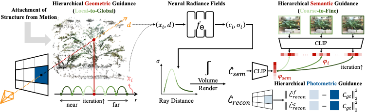
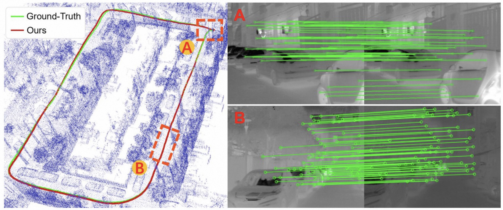

|
Zelin (Friday) Gao I am a Master (Sep. 2021 - Mar. 2024) student at College of Control Science and Engineering, Zhejiang Unerveristy. Before that, I obtatin my B.Eng (Sep. 2017 - Jun. 2021) from College of Instrumentation and Electrical Engineering, Jilin Unerveristy. I was a remote research intern at CCVL in Johns Hopkins University, and working with Yutong Bai. I also work very closely with Prof. Weichen Dai at Hangzhou Dianzi University and Jiajun Jiang at Alibaba Group. Email / Resume / Reasearch Statement / Twitter / Github |

|
Recent News[2024.02] Our paper is accepted by CVPR2024! [2024.01] GAP year starts and look forward to research intern! [2023.07] Our paper is accepted by ICCV2023! [2022.06] Our paper is accepted by IROS2022&RAL! |
ResearchMy research interest lies in 3D Vision, especially in the field of Neural Rendering, Implicit Representation, and SLAM. I also love 3D/4D Object Generation! Please check my github and see my implementation for Diffusion Model. Representative papers are highlighted. |

|
SAP3D: The More You See in 2D, the More You Perceive in 3D
Zelin Gao, Xinyang Han, Angjoo Kanazawa, Shubham Goel, Yossi Gandelsman, CVPR, 2024 project page / video / paper Humans can infer 3D structure from 2D images of an object based on past experience and improve their 3D understanding as they see more images. Inspired by this behavior, we introduce SAP3D, a system for 3D reconstruction and novel view synthesis from an arbitrary number of unposed images. |

|
Adaptive Positional Encoding for Bundle-Adjusting Neural Radiance Fields
Zelin Gao, Weichen Dai, Yu Zhang ICCV, 2023 project page / video / paper Adaptive Positional Encoding is proposed in this paper to train neural radiance fields from unknwon camera poses (or even initrinics). The theoretical relationship between Positional Encoding and Fourier Series Regression is investigated to prove that learnable frequencies can improve both accuracy of camera parameter estimation and view synthesis quality of scene representation. |
|

|
HG3-NeRF: Hierarchical Geometric, Semantic, and Photometric Guided Neural Radiance Fields for Sparse View Inputs
Zelin Gao, Weichen Dai, Yu Zhang ARXIV, 2023 project page / video / arxiv In this paper, we exploit the geometric, semantic, and photometric guidance to represent the neural radiance fields from sparse view inputs. We propose hierarchical geometric guidance (HGG) to sample volume points with the depth prior and hierarchical semantic guidance (HSG) to supervise semantic consistency of the complex real-world scenarios using CLIP. |
|

|
Thermal-Inertial SLAM for the Environments with Challenging Illumination
Jiajun Jiang, Weichen Dai, Xingxin Chen, Zelin Gao, Yu Zhang RAL&IROS, 2022 (Oral Presentation) project page / video / ieee Thermal images are used in this paper to realize a robust visual SLAM system in challenging environment. The proposed method, a thermal-inertial SLAM system, represents several improvements, including SVD-based image processing and Thermal-RAFT tracking methods. |
|
😂 This page is stolen from Jon Barron. 😂 |